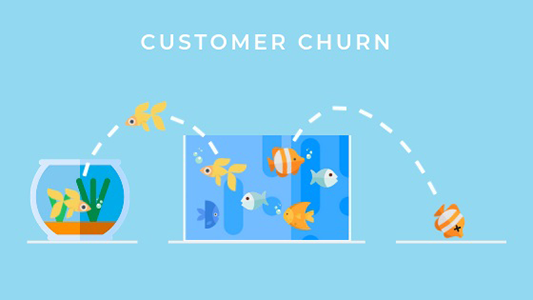
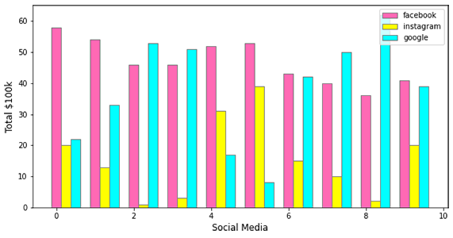

DS Projects
PL Smart-Selling Campaign
Rather than attracting new customers to increase sales, the alternative way is to build relationships with existing customers and encourage them to repeat purchases. From a bank's perspective, to discover characteristics of customers with personal loan and the possibility of smart-selling personal loan to our existing customers.
View Source CodeTelco Churn Prediction
Customer attrition can be much more expensive than customer retention and loyal customers are more profitable to companies by indirectly attracting more customers. Thus, it is important to identify customers with the highest propensity to churn, and offer incentives to persuade them to stay.
View Source CodeAds Sales Forecasting
Strategy and marketing are like bread and butter, and choosing the right channels and creating a strategy can be daunting. No one likes dry bread. By evaluating the effectiveness of ads on social media, networking sites such as Facebook, Instagram and Google to make sure the business knows which side of the bread is buttered.
View Source CodeSentiment Analysis

Text analysis allows companies to understand how customers feel about their brands and products, discover whether specific reviews or tweets are positive or negative, and which topics customers mention and why. Keeping an eye on feedbacks and sentiments allows companies to know their pain points, ways to improve and target new opportunities.
View Source CodeCafe Recommender System
A recommender system predicts the preference of a user and suggests relevant items to the user. Built a mini cafe recommender system to recommend beverages (coffee or tea) based on customers' past orders in the cafe.
View Source CodeHR Attrition Dashboard

The amount of people who quit plays a critical role in business success. High turnover could be serious as people are an essential part of every business. By understanding what really drives it could reduce organization's costs by retaining key people.
View Dashboard